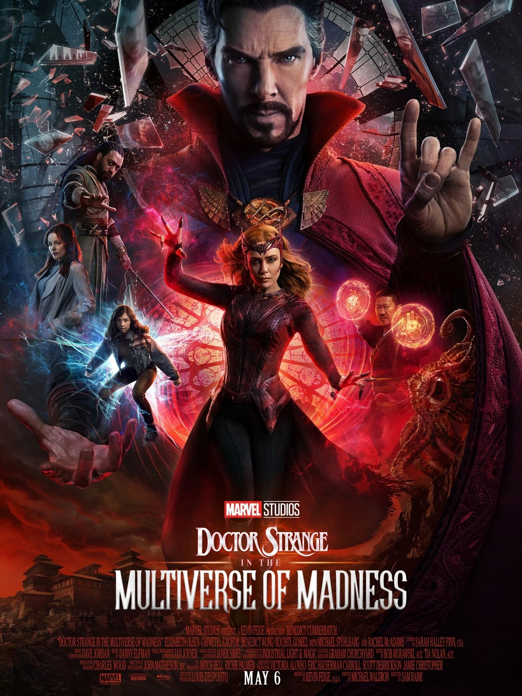

Sinopse
Após os eventos de Homem Aranha: Sem volta pra casa, Stephen Strange e seu parceiro Wong conhecem América Chavez, uma menina que tem a habilidade de viajar pelo multiverso. Ela está sendo perseguida por um inimigo misterioso, e pede ajuda dos magos para detê-lo. Wong leva a garota para Kamar-Taj, enquanto o Doutor Estranho pede a ajuda da Wanda, que estava isolada da sociedade desde o ocorrido em WandaVision.
Classificação:
